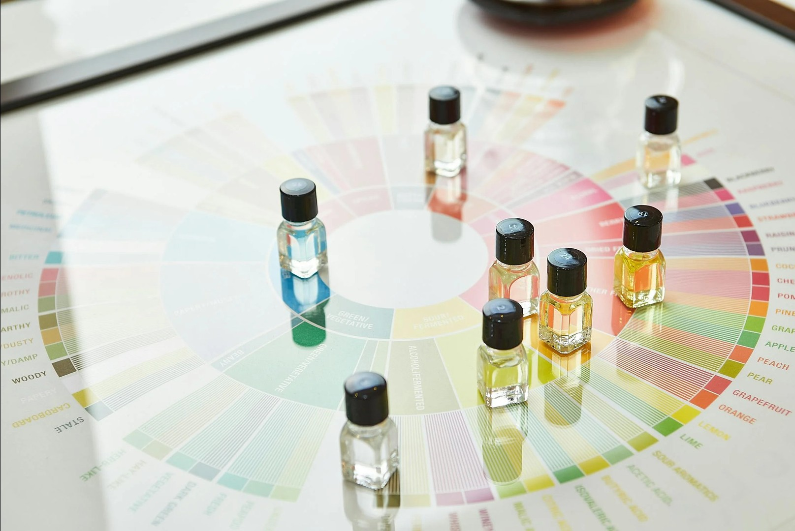

Explorați mai multe despre parfumuri
Aflați mai multe despre notele parfumurilor și cum influențează compoziția parfumurilor pe acest site extern.
Parfumuri Noi
Descoperă cele mai noi parfumuri lansate pe piață. Dacă vrei să găsești cele mai populare sau parfumuri premium, Scentora îți oferă toate informațiile de care ai nevoie pentru a face alegerea perfectă. Află despre notele parfumurilor, ingrediente parfumuri, și longevitatea parfumurilor.
Descoperă parfumul perfect
Aflați mai multe despre alegerea unui parfum ideal și ce note parfumuri ar trebui să aibă acesta pentru a se potrivi personalității voastre.
Video Parfumuri
Accesați următoarele videoclipuri pentru a învăța mai multe despre parfumerie:
Video 1: Introducere în ParfumuriVideo 2: Ce greseli sa nu faci!
Branduri
Aflați mai multe despre brandurile de parfumuri, fiecare cu propriile note parfumuri și ingrediente parfumuri care le fac unice. Explorează istoria fiecărui brand și parfumul lor reprezentativ.
Specialiști
Descoperă specialiști parfumuri care au creat unele dintre cele mai populare parfumuri. Învață despre tehnicile lor de combinare a notelor și ingredientelor pentru a crea parfumuri unice.
Recenzii
Vezi recenziile utilizatorilor despre parfumuri. Află ce părere au aceștia despre longevitatea și proiecția parfumurilor pe care le-au testat.
Despre Noi
Scentora este dedicată iubitorilor de parfumuri, oferind o platformă unde poți explora parfumuri, recenzii parfumuri, și branduri parfumuri celebre.
Căutare Parfum
Căută parfumurile dorite pe baza ingredientelor parfumuri, notelor parfumuri sau brandurilor parfumuri. Utilizați funcțiile avansate de căutare pentru a găsi parfumul perfect pentru tine.
Imagine cu Descriere

Locația Facultății
Vizualizați locația Facultății de Matematică și Informatică a Universității din București pe Google Maps: Facultatea de Matematică și Informatică
Întrebări frecvente
Întrebare 1: Cum funcționează platforma?
Răspuns: Platforma Scentora permite utilizatorilor să exploreze parfumuri, să citească recenzii parfumuri, să caute parfumuri după ingrediente și note și să lase propriile recenzii. Este o platformă interactivă pentru iubitorii de parfumuri.
Întrebare 2: Cum pot lăsa o recenzie?
Răspuns: După ce v-ați înregistrat pe platformă, navigați la pagina parfumului dorit și adăugați recenzia în secțiunea "Recenzii". Alegeți numărul de stele și scrieți părerea voastră despre parfumuri.
Întrebare 3: Cum pot căuta un parfum pe baza notelor?
Răspuns: Pe pagina de căutare, puteți selecta notele dorite și platforma va afișa toate parfumurile care conțin acele note. De asemenea, aveți opțiunea de a căuta parfumuri pe baza notelor pe care nu le doriți.
Descarcă Imaginea
Pentru a descărca imaginea, faceți clic pe linkul de mai jos:
Descarcă Parfumuri.jpg